MODEL
Lambda: 0.0
Dataset structure: 800 sequences with 100 features
Number of architectures in the best model: 15
Likelihood of best model: -144990.89403
Architecture 1: 191 sequences with 100 important features
Sequence logo for the important positions in architecture 1
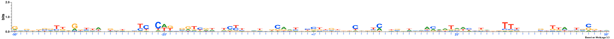
Architecture 2: 0 sequences with 100 important features
No Sequences
Architecture 3: 38 sequences with 100 important features
Sequence logo for the important positions in architecture 3
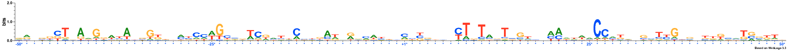
Architecture 4: 1 sequences with 100 important features
Sequence logo for the important positions in architecture 4
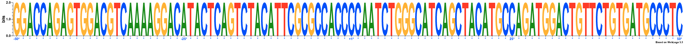
Architecture 5: 107 sequences with 100 important features
Sequence logo for the important positions in architecture 5
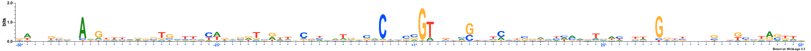
Architecture 6: 8 sequences with 100 important features
Sequence logo for the important positions in architecture 6
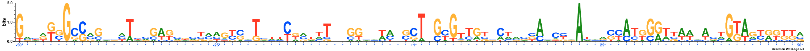
Architecture 7: 51 sequences with 100 important features
Sequence logo for the important positions in architecture 7
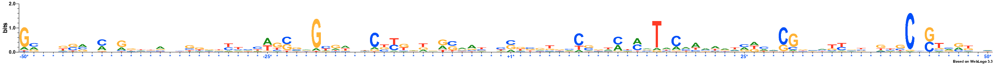
Architecture 8: 47 sequences with 100 important features
Sequence logo for the important positions in architecture 8
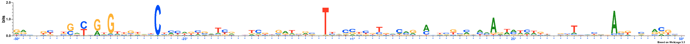
Architecture 9: 45 sequences with 100 important features
Sequence logo for the important positions in architecture 9
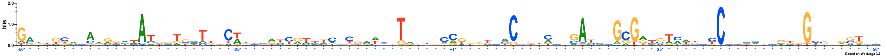
Architecture 10: 6 sequences with 100 important features
Sequence logo for the important positions in architecture 10
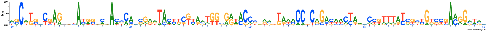
Architecture 11: 73 sequences with 100 important features
Sequence logo for the important positions in architecture 11
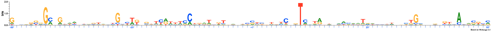
Architecture 12: 3 sequences with 100 important features
Sequence logo for the important positions in architecture 12
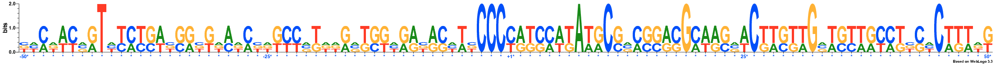
Architecture 13: 216 sequences with 100 important features
Sequence logo for the important positions in architecture 13
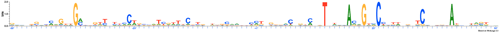
Architecture 14: 6 sequences with 100 important features
Sequence logo for the important positions in architecture 14
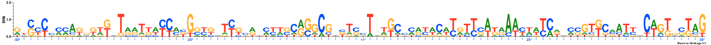
Architecture 15: 8 sequences with 100 important features
Sequence logo for the important positions in architecture 15
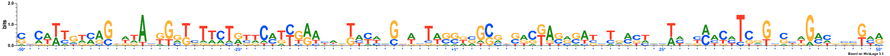
NOTE: All important positions in the logos are followed by an asterisk symbol and are coloured blue